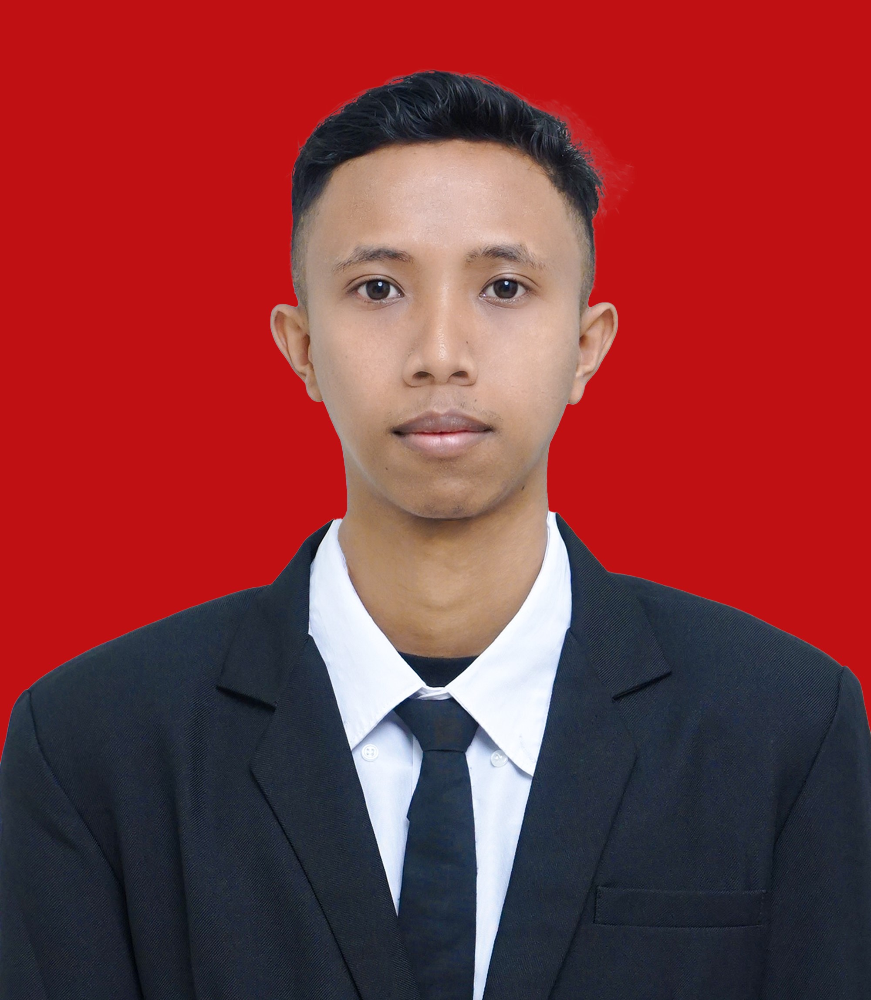

Saya merupakan lulusan S1 Ilmu Aktuaria yang memiliki kemampuan dalam pengolahan data, administrasi, serta analisis dasar keuangan. Terbiasa bekerja secara teliti, sistematis, dan bertanggung jawab dalam menyelesaikan tugas, khususnya yang berkaitan dengan pencatatan, pengelolaan, dan pengarsipan data. Memiliki keterampilan dalam penggunaan Microsoft Office, terutama Microsoft Excel dan Word, serta didukung dengan kemampuan komunikasi dan kerja sama tim yang baik. Dengan latar belakang pendidikan dan pengalaman yang dimiliki, saya siap berkontribusi secara optimal dalam mendukung operasional dan pelayanan di lingkungan kerja profesional

✔ Pemodelan Keuangan & Resiko
✔ Visualisasi Data Interaktif
✔ Machine Learning dasar & Prediksi
✔ Kolaborasi Tim & Komunikasi Efektif
Email Utama: lukmn0012@gmail.com
Telepon/WA: 082153410530
Instagram: @human.luc
Bantaeng, Sulawesi Selatan – siap untuk hybrid/onsite